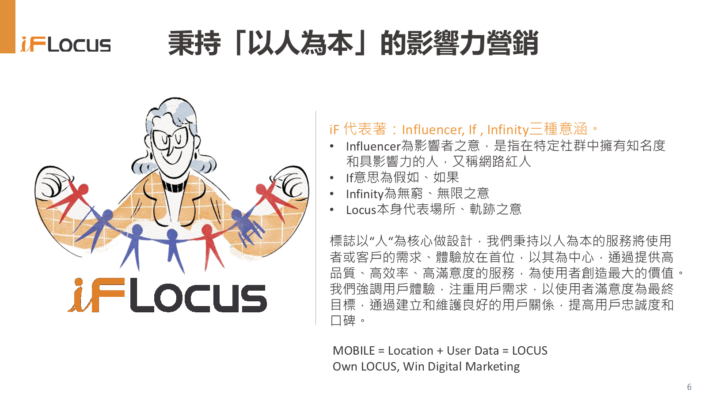
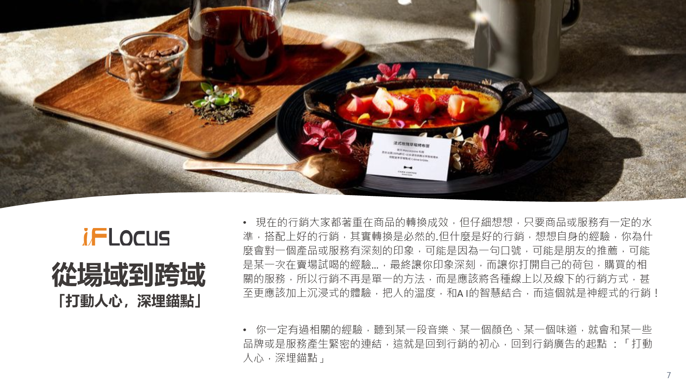
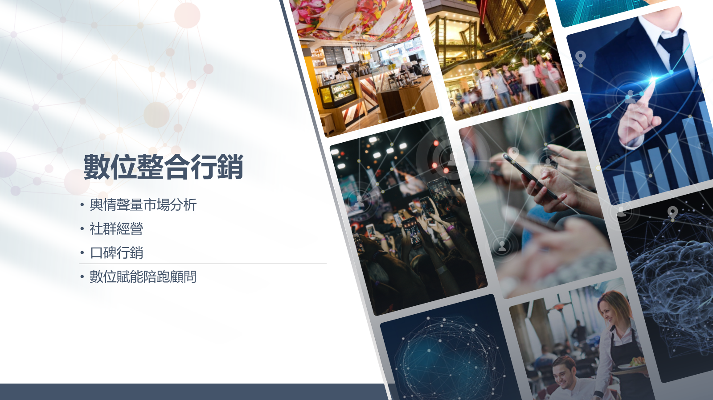
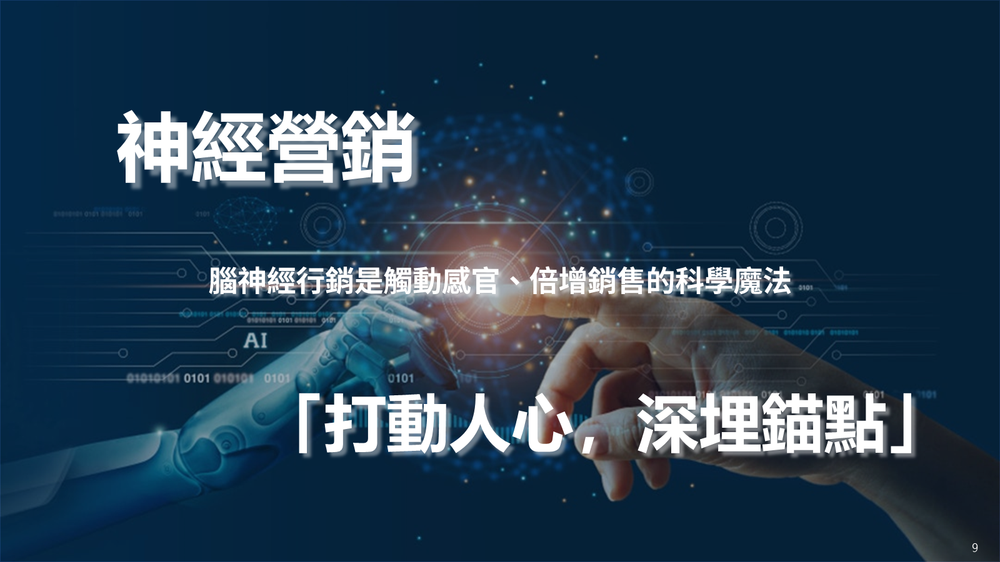
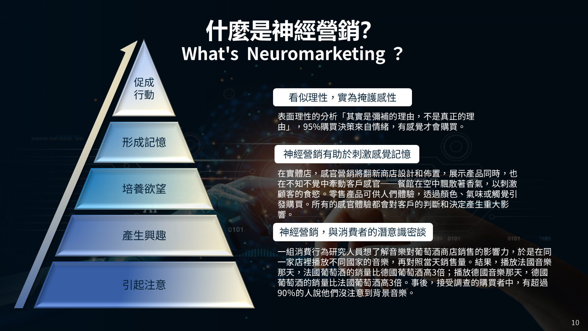
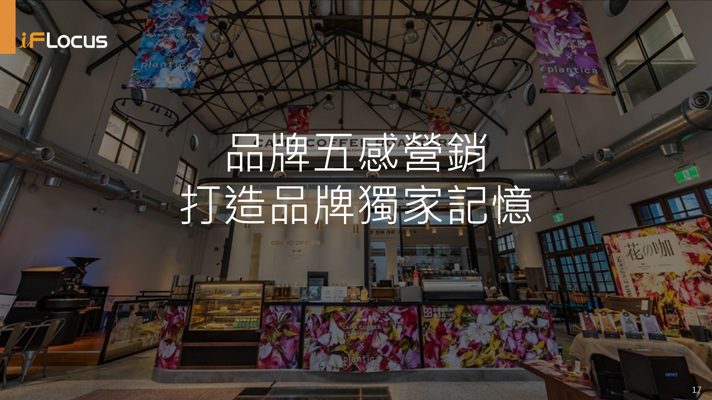
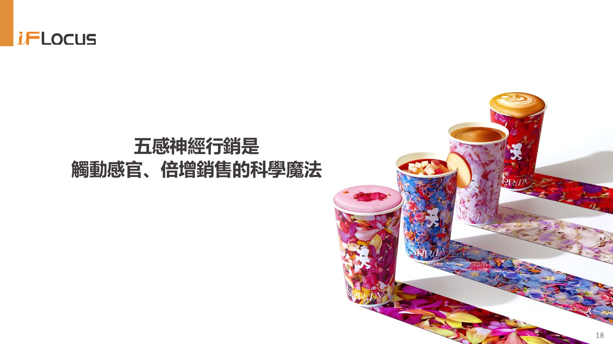

iF 代表 Influencer、If、Infinity；Locus 代表場所與軌跡。iFLocus 以人為核心，整合影響者、場域數據與五感體驗，陪品牌建立能被記住的成長路徑。
iF 代表著 Influencer、If、Infinity 三種意涵。Influencer 是在特定社群中擁有知名度與影響力的人，也就是網路紅人；If 代表「假如、如果」，提醒我們用更多可能性思考品牌與消費者的關係；Infinity 則代表無窮、無限，象徵品牌影響力能持續延伸。
Locus 本身代表場所、軌跡之意。對 iFLocus 而言，行動裝置中的 Location 與 User Data，串起消費者在真實場域與數位環境中的移動路徑，也形成品牌理解人、接觸人、打動人的重要基礎。
Own LOCUS, Win Digital Marketing。iFLocus 的標誌以「人」為核心做設計，延伸出以人為本的影響力營銷精神。

我們將使用者或客戶的需求、體驗放在首位，以其為中心，透過高品質、高效率、高滿意度的服務，為使用者創造最大的價值。
重視用戶需求與實際體驗，讓行銷不只追求曝光，也能回應消費者真正關心的情境。
透過良好的互動與服務，提升用戶滿意度、忠誠度與口碑，讓品牌影響力自然累積。
為每個客戶或品牌量身訂製行銷策略，同時兼顧作業效率與作品品質，讓策略能真正落地。

現代行銷若只追求轉換，容易忽略品牌真正被記住的原因。好的行銷可能是一句廣告標語、一次朋友推薦、一場試吃體驗，也可能是一段音樂、一種顏色或一個氣味，在消費者心中留下長期記憶。
iFLocus 讓行銷不再侷限於單一手法，而是整合線上線下、沉浸式體驗、人的溫度與 AI 的智慧，讓品牌從「場域」走向「跨域」，回到行銷的初心：讓人有感，才有行動。
腦神經行銷是觸動感官、倍增銷售的科學魔法。當視覺、氣味、聽覺、觸感與味覺被精準設計，品牌就更容易在大腦中形成記憶、慾望與行動。
對的視覺能提高轉換，讓消費者更快理解品牌想傳達的印象。
香氣能喚起熟悉感與記憶點，讓品牌在場域中留下可辨識的體驗。
音樂與聲音氛圍會影響停留、情緒與選擇，悄悄改變消費決策。
材質、包裝與服務接觸點，會讓品牌體驗變得更真實、更可信任。
試吃、飲品與味覺記憶能拉近距離，讓品牌偏好更容易被保留下來。
iFLocus 以影響力營銷為主軸，結合數位整合行銷、神經營銷、品牌陪跑與以客為尊的服務設計，讓品牌能被看見，也被真正相信。
整合輿情聲量市場分析、社群經營、口碑行銷與數位賦能陪跑，讓策略、內容與成效能互相支撐。
透過五感刺激與情緒記憶設計，將品牌印象轉化為更自然的興趣、偏好與購買行動。
協助品牌從定位、故事、視覺、內容到通路接觸點建立一致的成長節奏。
以客戶需求與使用者體驗為核心，設計更貼近真實市場的行銷與服務流程。

結合輿情聲量市場分析、社群經營、口碑行銷、數位賦能陪跑與顧問服務，形成品牌成長支援系統。

以「打動人心，深埋錨點」作為策略核心，讓消費者在感官與情緒中形成品牌記憶。

消費決策常先由感覺啟動，再由理性補充理由；因此品牌需要設計能被感受到的體驗。

透過場景、感官與記憶點的設計，打造品牌專屬、可累積的識別體驗。

將行銷從單純曝光推進到感官體驗，讓品牌更容易被記住、被信任與被選擇。
從影響力、場域數據到五感體驗，iFLocus 協助品牌把注意力轉化為信任與實際行動。